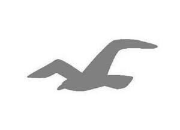

Trade Mark Journal No.2025/028 11 July 2025
UK00004225266 26 June 2025 (4,9,14,25,35)

- Class 4
- Candles.
- Class 9
- Anti-glare glasses; augmented reality glasses; augmented reality headsets; bags adapted for laptops; bags adapted for computers; cases adapted for cellular phones; cases adapted for computers; cases and covers for cellular phones; cases and covers for electronic devices; cases for children's eyeglasses; cases for eyeglasses and sunglasses; cases for smartphones; chains for spectacles and sunglasses; computer bags; cords for eyeglasses and sunglasses; covers for smartphones; covers for tablet computers; covers for portable media players; decorative magnets; earbuds; earphones; e-commerce software; eyeglasses worn for sports training; eyeglass holders; eyewear; eyewear cases; eyewear pouches; fashion eyeglasses; goggles for sports; headphones; headsets; holders adapted for mobile telephones and smartphones; loudspeakers; mobile phone ring holders; mobile phone ring stands; parts and accessories for eyeglasses; portable speakers; smartglasses; sunglasses; sunglasses for animals; virtual reality headsets; virtual reality goggles.
- Class 14
- Precious metal alloys; precious metals, unwrought or semi-wrought; amulets [jewellery]; ankle bracelets; bracelets; bracelet charms; brooches [jewellery]; chains [jewellery]; cuff links; earrings; facial jewellery; jewellery; imitation jewellery; plastic jewellery; rings [jewellery]; tie clips; tie pins; wristwatches; cases for watches and clocks; jewellery boxes; key rings; charms for key rings; precious stones; horological and chronometric instruments.
- Class 25
- Clothing; tops [clothing]; shirts; tank tops; sweaters; hooded sweatshirts; tee-shirts; blouses; knitwear [clothing]; pullovers; sweatshirts; polo shirts; bodysuits; cardigans; camisoles; bustiers; bottoms [clothing]; jeans; pants; shorts; sport joggers; trousers; chinos; sweatpants; skirts; skorts; leggings [trousers]; dresses; gowns; wedding gowns; jumpsuits; rompers; onesies; suits; sportswear; swimwear; swimsuits; swim trunks; bikinis; coverups; sarongs; rashguards; outerclothing; coats; overcoats; jackets [clothing]; blazers; vests; puffer jackets; parkas; wind jackets; underwear; lingerie; boxers shorts; briefs; brassieres; bralettes; corsets [underclothing]; panties; sleepwear; pajamas; nightgowns; robes; loungewear; bandanas [neckerchiefs]; belts [clothing]; ear muffs [clothing]; face masks [clothing], not for medical or sanitary purposes; gloves [clothing]; hosiery; leg warmers; mittens; neckties; scarves; shawls; shower caps; sleep masks; socks; sports shoes; footwear; shoes; flip-flops; sandals; mules; slippers; boots; headwear; berets; caps being headwear; hats; headbands [clothing]; waterproof clothing; windproof clothing; dance clothing; masquerade costumes; articles of clothing, footwear and headgear for babies and toddlers; babies' bibs, not of paper; children’s clothing; layettes [clothing].
- Class 35
- Advertising; business management; business administration; office functions; retail store services connected with clothing, footwear, headgear, soaps, perfumes, essential oils, cosmetics, hair lotions, candles, eyeglasses, sunglasses, accessories for phones, accessories for computers and accessories for audiovisual electronic devices, jewellery, stationery articles, bags, textile goods and hair accessories; online retail store services connected with clothing, footwear, headgear, soaps, perfumes, essential oils, cosmetics, hair lotions, candles, eyeglasses, sunglasses, accessories for phones, accessories for computers and accessories for audiovisual electronic devices, jewellery, stationery articles, bags, textile goods and hair accessories; organization, operation and supervision of customer loyalty schemes; marketing and promoting goods and brand identity through the use of brand ambassadors and social media; promotion of goods through influencers; influencer marketing.
Abercrombie & Fitch Europe Sagl
Representative: Morgan, Lewis & Bockius UK LLP